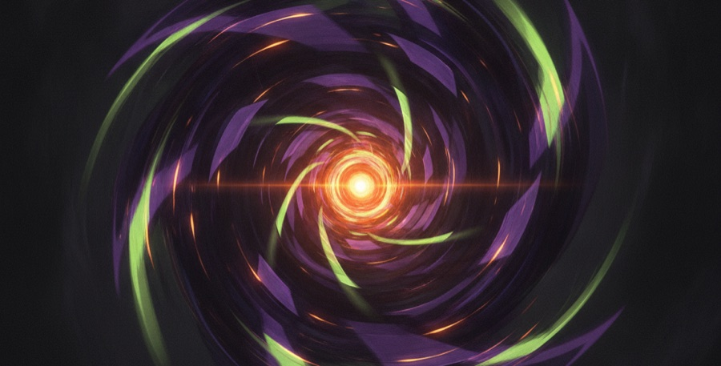

戰鬥陀螺 X × 福音戰士 EVA 聯名，預計 9 月登場
兩大經典跨界！戰鬥陀螺 X 攜手《新世紀福音戰士 Evangelion》推出聯名款，預計 2026 年 9 月發售。對 EVA 迷與陀螺迷來說，都是不容錯過的收藏話題。（更新：2026-07-05）
三句話看完
- 戰鬥陀螺X × EVA聯名，預計2026年9月發售
- 款式與配置細節待官方公布
- 台灣可抽一番賞，認正版拒盜版

兩個經典 IP 為什麼會跨界合作？
《新世紀福音戰士》是橫跨世代的動畫經典，配色與機體識別度極高；戰鬥陀螺 X 這次的聯名，讓 EVA 的視覺語言化為可對戰、可收藏的陀螺。目前官方釋出的資訊為預計 2026 年 9 月發售，更多配置與款式細節待官方進一步公布。
戰鬥陀螺 X × 福音戰士・目前已知
| 聯名 | 新世紀福音戰士 Evangelion |
| 預計發售 | 2026 年 9 月 |
| 定位 | 跨界聯名收藏款 |
| 細節 | 款式／配置待官方公布 |
日期與內容以官方公告為準；聯名收藏款常需預購。
資料來源：玩具通路預購情報（宏富玩具等）。本文為新聞整理與新手導覽，Go Shoot 只賣正版、拒絕盜版。
想收藏聯名款？先卡預購、認正版
動畫聯名款一向是收藏市場的搶手貨，開賣即秒殺、之後價格水漲船高。想穩穩收到正版，最好的方式是提早卡預購。
- 線上一番賞：陀螺主題獎單不定期上架，每抽必中入手正版（看一番賞）。
- 認明正版：聯名越紅、仿冒越多，認 TAKARA TOMY 與 ST 標誌最安心。
常見問題
戰鬥陀螺福音戰士聯名什麼時候發售？
戰鬥陀螺 X × 福音戰士 Evangelion 聯名款預計 2026 年 9 月發售，實際日期與款式以官方公告為準。
台灣買得到 EVA 聯名陀螺嗎？
聯名款台灣不一定鋪貨，可留意玩具通路的預購情報，或到 Go Shoot 線上一番賞抽陀螺獎單、入手正版。
聯名款會很難買嗎？
動畫聯名款通常搶手、易秒殺，提早卡預購最穩，也能避免之後被高價轉售。
怎麼確認買到的是正版聯名？
認明 TAKARA TOMY 官方標與 ST 安全標誌；透過 Go Shoot 一番賞入手，只給正版。